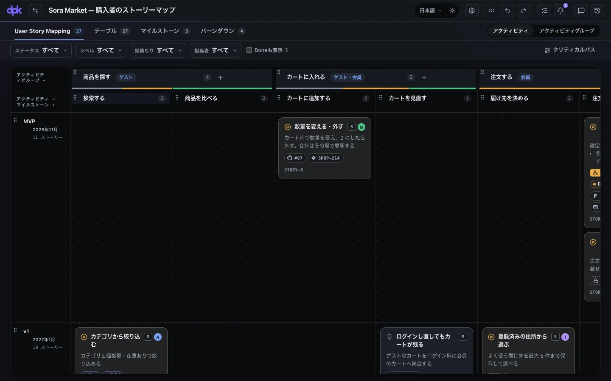
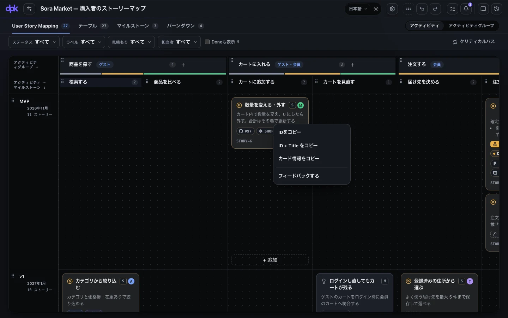
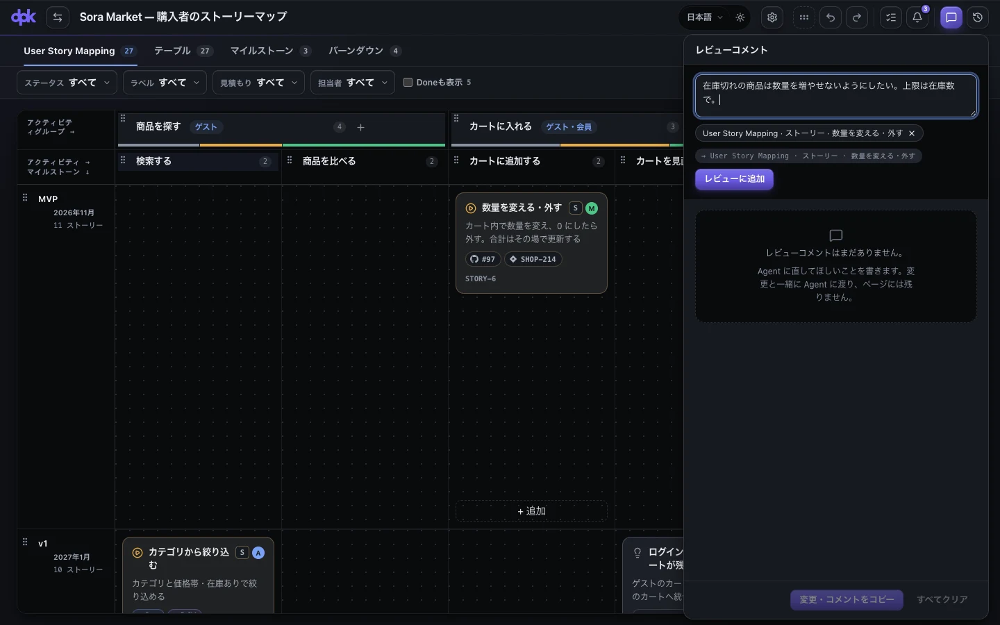
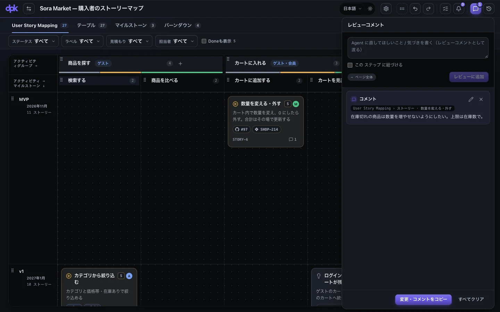
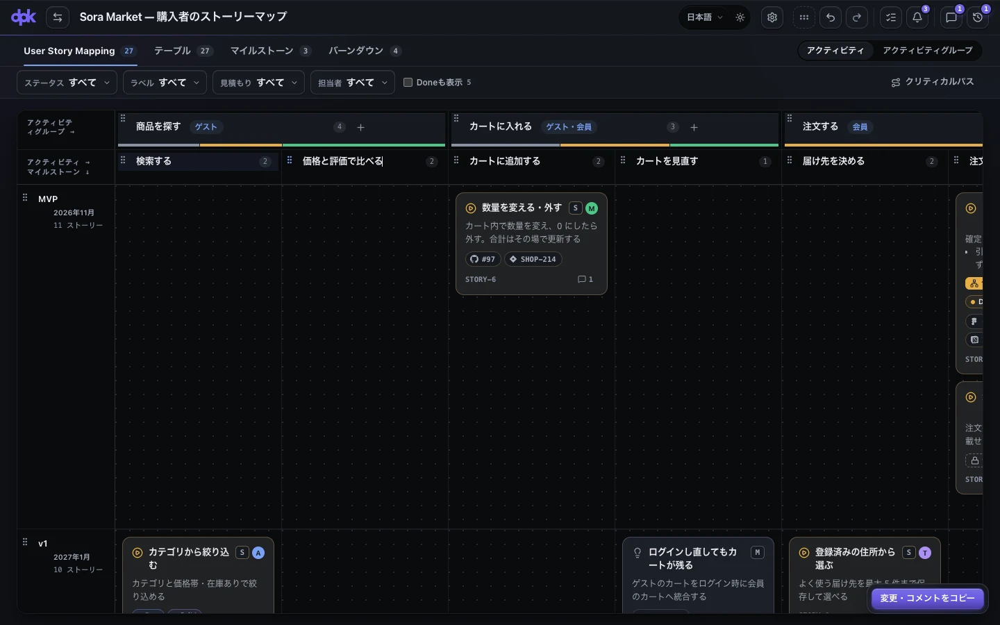
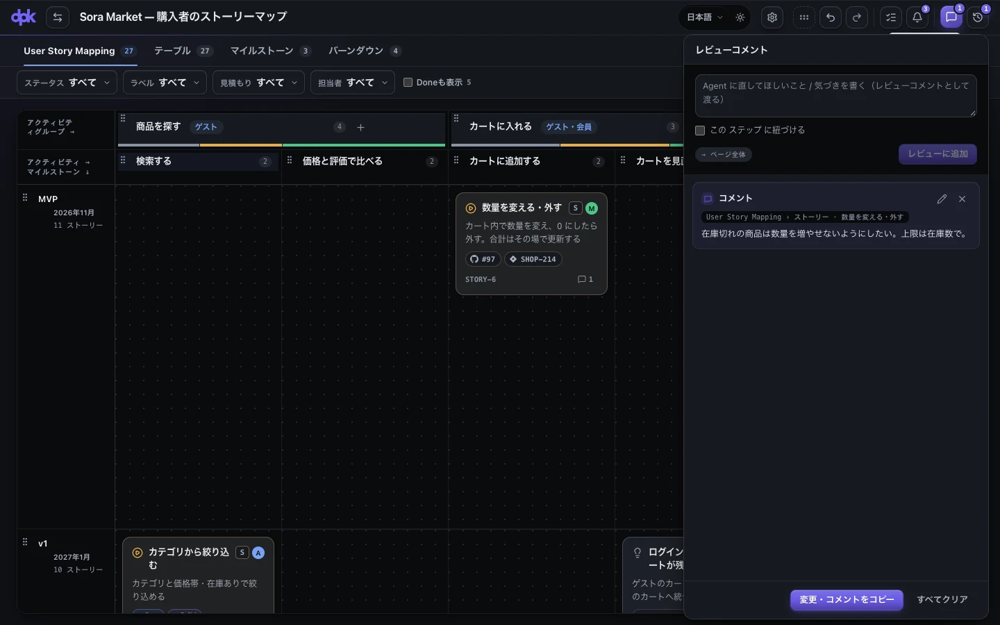

## 1. 背景 購入者はカートに商品を入れたあと、数量の変更や削除をその場で行いたい。 現状は商品詳細ページに戻らないと数量を変えられず、離脱の原因になっている。 ## 2. ユーザーストーリー - 購入者として、商品を検索したい。なぜなら… - 購入者として、商品を比べたい。なぜなら… - 購入者として、カートの数量を変えたい。なぜなら… - 購入者として、届け先を選びたい。なぜなら… - 会員として、登録済みの住所から選びたい。なぜなら… ## 3. マイルストーン MVP（2026年11月）には 11 ストーリーを含める。v1（2027年1月）には… ## 4. 優先度の考え方 クリティカルパス上のストーリーを先に着手する。依存関係は次のとおり… - 注文の状態と明細を見る → 4 件をブロック - 支払い方法を選ぶ → 決済を完了する ## 5. 未決事項 - ゲストのカートをログイン時に統合するか - 在庫切れ商品の扱い - キャンセル可能な期間 ## 6. 画面ごとの詳細 ### 6.1 カート 数量を変え、0 にしたら外す。合計はその場で更新する… ### 6.2 届け先 よく使う届け先を最大 5 件まで保存して選べる… ### 6.3 注文確認 …






> ## Comments (1)
1. User Story Mapping › ストーリー · 数量を変える・外す
— story:change-quantity@usm
> 在庫切れの商品は数量を増やせないようにしたい。上限は在庫数で。
## Requested changes (1)
1. ステップ名を変更 — 「商品を比べる」→「価格と評価で比べる」
target: step:discover.product-detail@usm
{ "type": "SET_STEP_NAME", "payload": { "name": "価格と評価で比べる" } }
## Canonical draft (JSON)
…
音声: VOICEVOX:ずんだもん / VOICEVOX:四国めたん（音源利用規約）
イラスト: 東北ずん子・ずんだもんプロジェクト 公式素材（SSS合同会社、キャラクター利用ガイドライン）